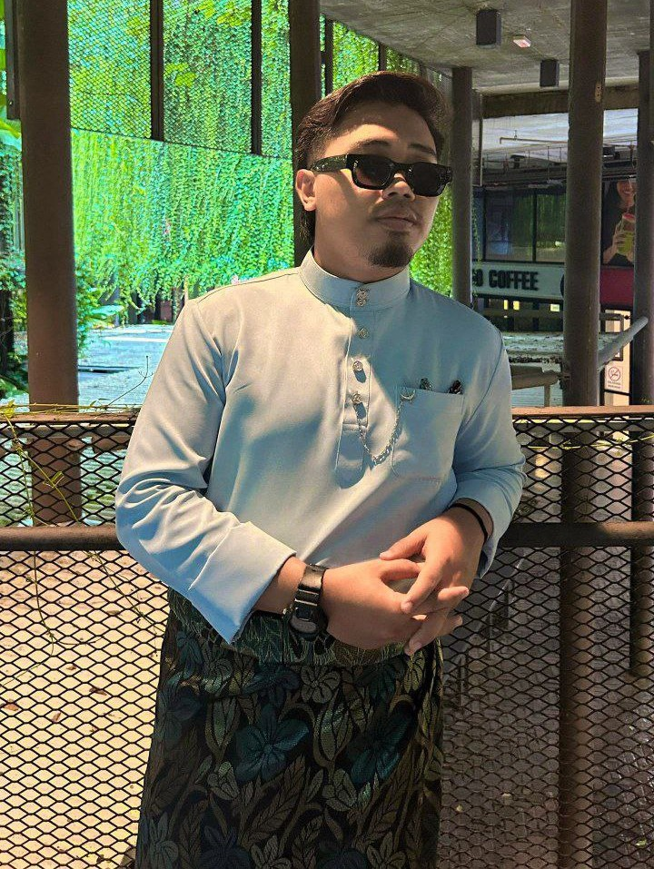
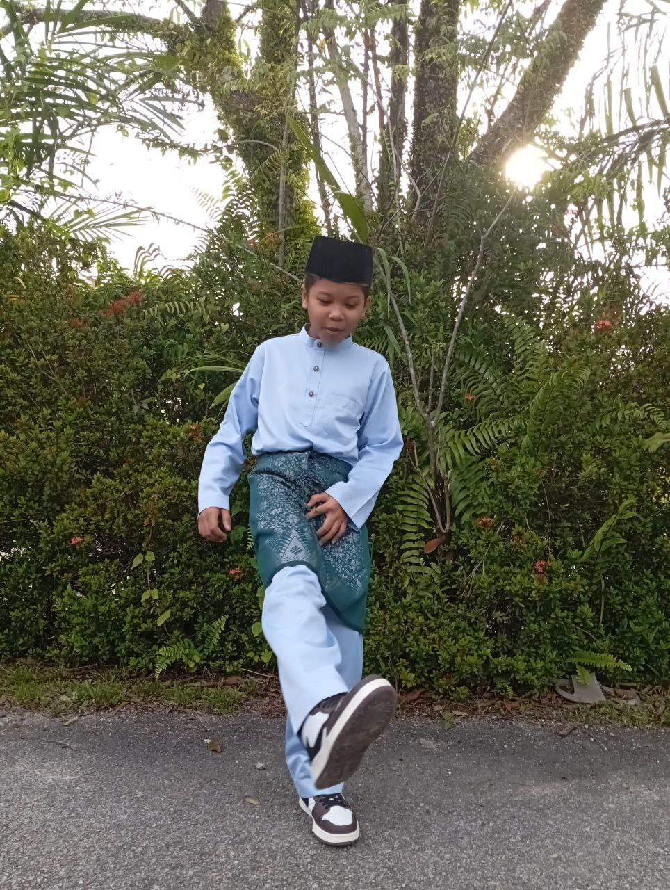
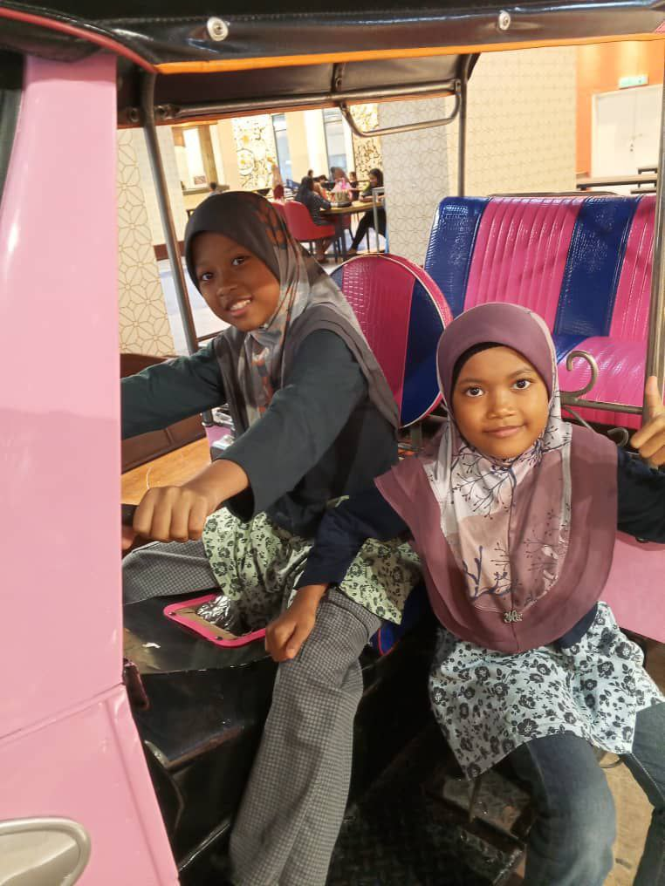

This is my parents. My father was born in 1976 while my mother was born in 1978. They both are working as teachers in a secondary school in Klang

This is my oldest brother, Syamil. He is 22 years old and currently studying at Universiti Islam Selangor.
This is my brother, Mu'az. He is a year younger than me, 19 years old. He is studying in Universiti Sains Islam Malaysia.
This is my sister, Afifah. She is 17 years old and is studying in Bolu, Turkish.

This is my little brother, Auff. He is 12 years old. He's in his last year in primary school at SK Pulau Indah.

These are my little sisters. On the left is the second youngest, Anisah. She is 10 years old. On the right side is the youngest, Amanina. She is 9 years old. They both are studying at SK Pulau Indah.